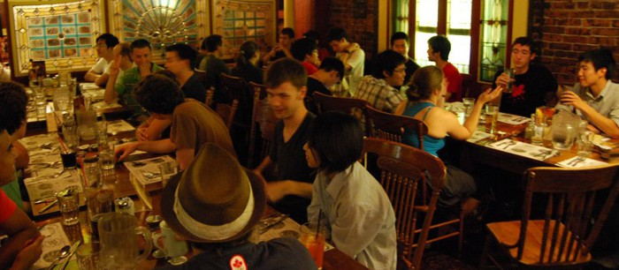
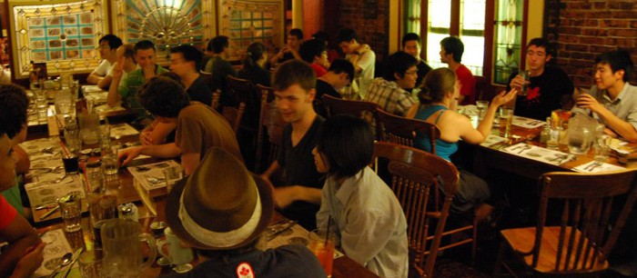
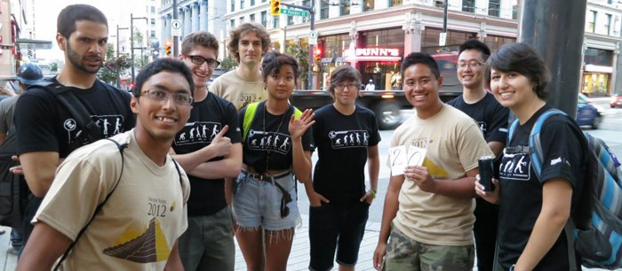
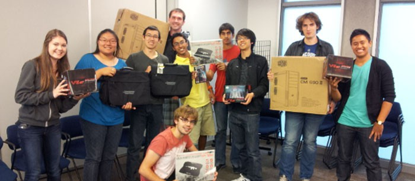
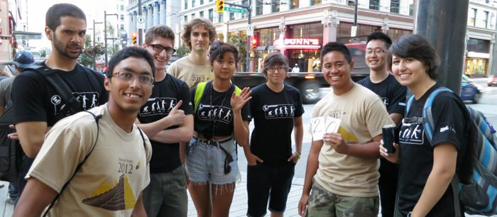
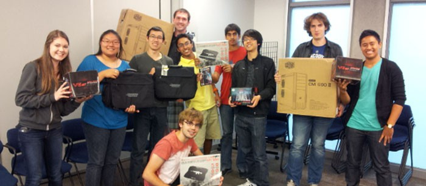

 



What is FroshWeek?
FroshWeek is the ultimate introductory experience for Computing Science students at Simon Fraser University. Organized by the Computing Science Student Society, in partnership with the School of Computing Science, it is a week of fun-filled activities designed to orient, entertain and educate new university students with a Computing Science twist.
Held during the first week of the Fall semester at SFU (Sept. 3 - 6), FroshWeek is organized by students, for students. Incoming students receive: an in-depth introduction to the facilities available to them as Computing Science students; many entertaining on- and off-campus challenges and diversions to motivate, amuse, and connect them with other students; valuable advice from their elders with respect to courses and the university experience in general; and some free food and tools to make the transition to university much smoother.
Beginning in 2004, and now in its tenth year running, Computing Science's Froshweek has matured into one of the most well received and recognized student-organized events at Simon Fraser University. It is a memorable and cherished week for participants and organizers alike.
What is the Computing Science Student Society?
The Computing Science Student Society is a departmental student society based out of Simon Fraser University. Operating under the Simon Fraser Student Society, we act to recognize the academic and recreational demands of Computing Science students, providing them with a better experience at SFU. We have seats on the School of Computing Science Undergraduate Program Committee and the Faculty of Applied Science Undergraduate Curriculum Committee. The society also facilitates recreational activities, such as LAN parties, board game nights and movie nights, as well as joining the Simon Fraser Student Society and other departmental student societies for events. On a day-to-day level, the society provides services for Computing Science students such as a common area, printing, and inexpensive beverages.